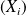
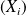
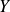
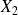
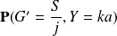
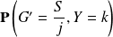
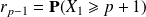

Sujet MP 2015-14 : Probabilités / corrigé complet
Le sujet est téléchargeable ci-dessous.
Le corrigé des questions de mathématiques est de François Sauvageot ainsi que les indices ! Merci à lui.
Question
1. Dans cette question, on suppose que les joueurs choisissent leur prédiction au hasard indépendamment les uns des autres. On admet que dans ces conditions, les variables aléatoires sont mutuellement indépendantes et de même loi.
a. Justifier que les variables suivent la même loi. On ne demande pas de déterminer explicitement cette loi.
Soit
 et
dans
. En utilisant la notation (due à Rényi) somme pour la réunion disjointe d'évévénements, on a
et
dans
. En utilisant la notation (due à Rényi) somme pour la réunion disjointe d'évévénements, on a
pour variant dans et variant dans l'ensemble des parties (éventuellement vides) de de cardinal . C'est donc un événement observable. Il en va de même pour qui est le complémentaire de la réunion de ces évenements pour variant dans . Par conséquent est une variable aléatoire discrète à valeurs dans un ensemble fini, et admet donc des moments de tous ordres.
Par indépendance des variables aléatoires
, les événements dont on prend l'intersection dans l'expression précédente sont indépendants. Puisque ces variables aléatoires sont de plus identiquement distribuées, les probabilités de chacun des événements dans l'intersection ne dépend pas de l'indice
ou
 qui y apparaît, mais seulement de
. Ainsi la loi de
est indépendante de
. Plus précisément si
est une des variables

, on a
qui y apparaît, mais seulement de
. Ainsi la loi de
est indépendante de
. Plus précisément si
est une des variables

, on a
.
Question
b. Justifier que l'espérance de est quel que soit .
Puisque la somme des gains est toujours
 , on a
, on a
 et donc, par linéarité de l'espérance et puisque les variables sont identiquement distribuées, on a
et donc, par linéarité de l'espérance et puisque les variables sont identiquement distribuées, on a
et l'assertion s'ensuit.
Question
2. À l'aide de Python, écrire une fonction d'arguments
,
 ,
simulant une partie et renvoyant la liste des gains de chaque joueur. On pourra représenter pile par 0 et face par 1.
,
simulant une partie et renvoyant la liste des gains de chaque joueur. On pourra représenter pile par 0 et face par 1.
Calculer le gain moyen de chaque joueur à l'issue d'un grand nombre de parties.
Utiliser la fonction numpy.random.binomial() présentée dans la synthèse sur les probabilités.
import numpy.random as rd
fonction simulant une partie
def partie_q2(n, N, S = 1):
'''n est le nombre de joueurs, supérieur ou égal à 3, N est le nombre de tirages d'une pièce équilibrée, S est la somme en euros à se partager à l'issue de la partie.''' # prédictions des joueurs. pred = []for i in range(n):
pred.append(rd.binomial(1, 0.5, N))
# tirage des lancerstirage = rd.binomial(1, 0.5, N)
# Affectation des pointspoints = [0 for i in range(n)]
for j in range(N):
for i in range(n):
if tirage[j] == pred[i][j]:
# le joueur i a fait une prévision correctepoints[i] += 1
# Sélection des gagnantsgagnants, points_max = [0], points[0]
for i in range(1, n):
if points[i] > points_max:
# le joueur i a eu le maximum de points intermédiairegagnants, points_max = [i], points[i]
elif points[i] == points_max:
# le joueur i a eu lui aussi le maximum de points intermédiairegagnants.append(i)
# Affectation des gainsnbre_gagnants = len(gagnants)
gain = round(S / nbre_gagnants, 2)
gains = [0 for i in range(n)]
for g in gagnants:
gains[g] += gain
# Renvoi des des gains pour chaque joueur en dans une listereturn(gains)
fonction simulant plusieurs parties
def parties_q2(n, N, np, S = 1):
'''n est le nombre de joueurs, supérieur ou égal à 3, N est le nombre de tirages d'une pièce équilibrée, np est le nombre de parties jouées, S est la somme en euros à se partager à l'issue de la partie.''' gains_totaux = [0 for i in range(n)]
for p in range(np):
gains_partie = partie_q2(n, N, S)
gains_totaux = [gains_totaux[i] + gains_partie[i] for i in range(n)]
return([gains_totaux[i] / np for i in range(n)])
Résultats de simulations
In [2]: parties_q2(7, 100, 1000, 1)
Out[2]:
[0.13031, 0.14531, 0.14331, 0.16097999999999998, 0.14916, 0.13914999999999997, 0.13163999999999998]Question
3. Dans cette question, on suppose
impair et on notera
 l'entier tel que
.
l'entier tel que
.
a. Montrer que les suivent tous la même loi que l'on précisera.
La formulation est ridicule. Choisir au hasard ne présume en rien de la loi selon laquelle ce hasard se réalise. Nous supposerons donc que l'énoncé imagine que le hasard se comporte de façon uniforme, ce qui est très décevant de la part d'une question dans un concours scientifique et est même franchement choquant.
Si le lancer de la pièce est modélisé par une loi de Bernoulli de paramètre ,
tout comme le choix du joueur
 , et donc aussi
, la probabilité que ces deux variables soient égales est donnée par la probabilité que deux variables indépendantes et identiquement distribuées selon une même loi de Bernoulli de paramètre
soient églaes, ce qui est
, soit
(ce serait totalement différent si on prenait une loi de Bernoulli de paramètre
dépendant de l'ordre
du lancer et distinct de
, bref). Il en résulte que les
suivent une même loi binomiale de paramètre
.
, et donc aussi
, la probabilité que ces deux variables soient égales est donnée par la probabilité que deux variables indépendantes et identiquement distribuées selon une même loi de Bernoulli de paramètre
soient églaes, ce qui est
, soit
(ce serait totalement différent si on prenait une loi de Bernoulli de paramètre
dépendant de l'ordre
du lancer et distinct de
, bref). Il en résulte que les
suivent une même loi binomiale de paramètre
.
Question
b. Préciser l'ensemble des valeurs prises par  .
Puisque
et

sont à valeurs dans
 et vérifient
,
est à valeurs dans
.
et vérifient
,
est à valeurs dans
.
Question
c. Soit et . Calculer  en fonction de et .
On suppose que l'énoncé demande de calculer

. On suppose aussi, au vu de la question 4 que les
sont des
 . On ne suppose pas par contre que l'énoncé a été relu avant d'être mis en ligne.
. On ne suppose pas par contre que l'énoncé a été relu avant d'être mis en ligne.
Les arguments de la question 1.a montrent que la probabilité cherchée est donnée par
puisque .
Par symétrie de la loi binomiale, on obtient
Question
d. En déduire
,
et
. La stratégie adoptée par les joueurs
et
est-elle avantageuse ?
\cdot
Soit
 un entier et
un entier et
 l'application qui à
associe
. C'est une application polynomiale, nulle en 0, de dérivée donnée par
, i.e.
. Donc
.
l'application qui à
associe
. C'est une application polynomiale, nulle en 0, de dérivée donnée par
, i.e.
. Donc
.
On a et , et, en utilisant ce qui précède avec et , ainsi que , il vient en utilisant la formule des probabilités totales,
et donc
.
Cette quantité est supérieure à car pour , et donc la stratégie est avantageuse en moyenne.
Question
4. On se place dans les mêmes conditions que la question 3 mais on suppose maintenant que
est pair. On notera
l'entier tel que
. Montrer que
La stratégie adoptée par les joueurs
et
est-elle à nouveau avantageuse ?
Un cas supplémentaire est à considérer :
. Pour
dans
, on a
et donc, en utilisant ce qui précède
.
On a , en reprenant le calcul effectué en question précédente. Il vient donc avec , , ,
,
ce qui est l'assertion demandée. On a donc
 si et seulement si
si et seulement si
, i.e. .
Par symétrie des coefficients binomiaux, on a

et donc
. Par croissance des fonctions puissances sur
, l'application
est strictement convexe sur
et coïncide avec
en
 et en 1, donc lui est strictement inférieur sur
. Par conséquent la stratégie est une fois encore avantageuse en moyenne.
et en 1, donc lui est strictement inférieur sur
. Par conséquent la stratégie est une fois encore avantageuse en moyenne.
Question
5. Reprendre la question 2 en tenant compte de la stratégie des joueurs
et
. Vérifier que les gains moyens sont cohérents avec les espérances calculées aux questions précédentes. On pourra utiliser la fonction factorial du module math qui renvoie la factorielle d'un entier.
Je ne comprends pas le sens de la dernière phrase...
fonction simulant une partie
def partie_q5(n, N, S = 1):
'''n est le nombre de joueurs, supérieur ou égal à 3, N est le nombre de tirages d'une pièce équilibrée, S est la somme en euros à se partager à l'issue de la partie.''' # prédictions des joueurs.pred = [rd.binomial(1, 0.5, N)] # premier joueur
pred.append([(pred[0][i] + 1) % 2 for i in range(N)]) # deuxième joueur
for i in range(2, n):
# autres joueurspred.append(rd.binomial(1, 0.5, N))
# tirage des lancerstirage = rd.binomial(1, 0.5, N)
# Affectation des pointspoints = [0 for i in range(n)]
for j in range(N):
for i in range(n):
if tirage[j] == pred[i][j]:
# le joueur i a fait une prévision correctepoints[i] += 1
# Sélection des gagnantsgagnants, points_max = [0], points[0]
for i in range(1, n):
if points[i] > points_max:
# le joueur i a eu le maximum de points intermédiairegagnants, points_max = [i], points[i]
elif points[i] == points_max:
# le joueur i a eu lui aussi le maximum de points intermédiairegagnants.append(i)
# Affectation des gainsnbre_gagnants = len(gagnants)
gain = round(S / nbre_gagnants, 2)
gains = [0 for i in range(n)]
for g in gagnants:
gains[g] += gain
# partage des gains entre les deux premiers joueursg_j_12 = round((gains[0] + gains[1]) / 2, 2)
gains[0], gains[1] = g_j_12, g_j_12
# Renvoi des des gains pour chaque joueur en dans une listereturn(gains)
fonction simulant plusieurs parties
def parties_q5(n, N, np, S = 1):
'''n est le nombre de joueurs, supérieur ou égal à 3, N est le nombre de tirages d'une pièce équilibrée, np est le nombre de parties jouées, S est la somme en euros à se partager à l'issue de la partie.''' gains_totaux = [0 for i in range(n)]
for p in range(np):
gains_partie = partie_q5(n, N, S)
gains_totaux = [gains_totaux[i] + gains_partie[i] for i in range(n)]
return([gains_totaux[i] / np for i in range(n)])
En fait, cette dernière fonction est inchangée par rapport à partie_q2().
Résultats de simulations
In [3]: parties_q5(7, 100, 5000, 1)
Out[3]:
[0.16004599999999986, 0.16004599999999986, 0.13590000000000008, 0.13112600000000002, 0.13886400000000004, 0.14424600000000004, 0.12971200000000008]In [4]: parties_q5(8, 100, 5000, 1)
Out[4]:
[0.14128199999999996, 0.14128199999999996, 0.12345999999999997, 0.11488400000000001, 0.11920399999999998, 0.12626400000000004, 0.11886200000000001, 0.114712]